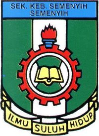
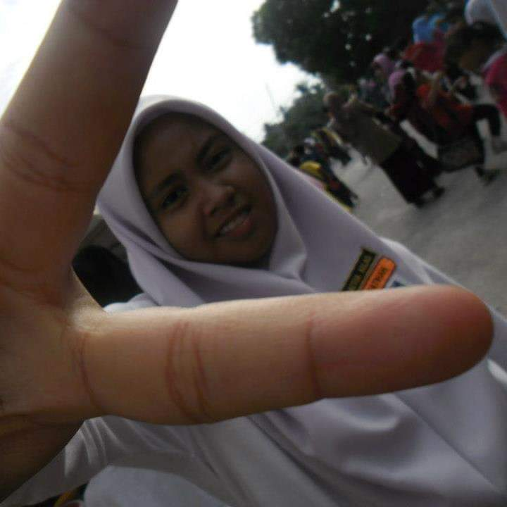
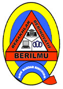
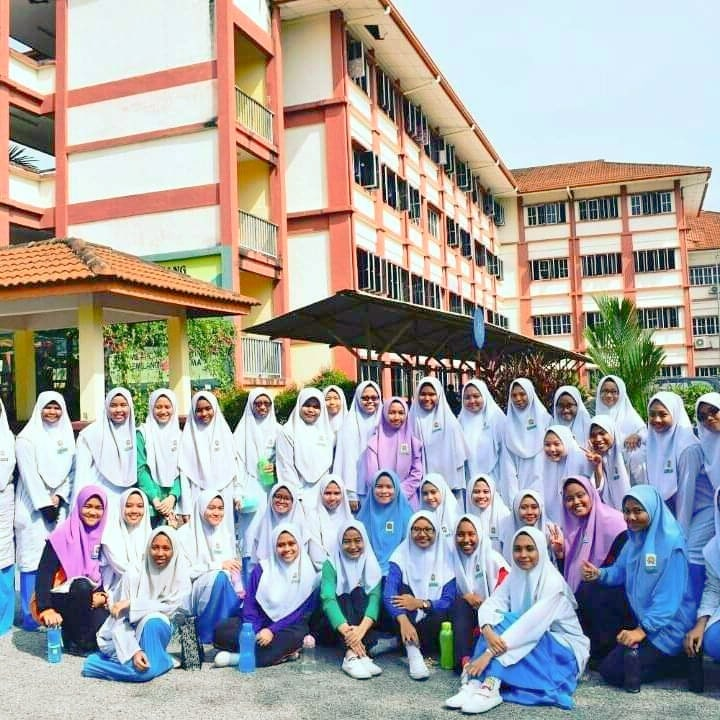
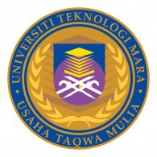
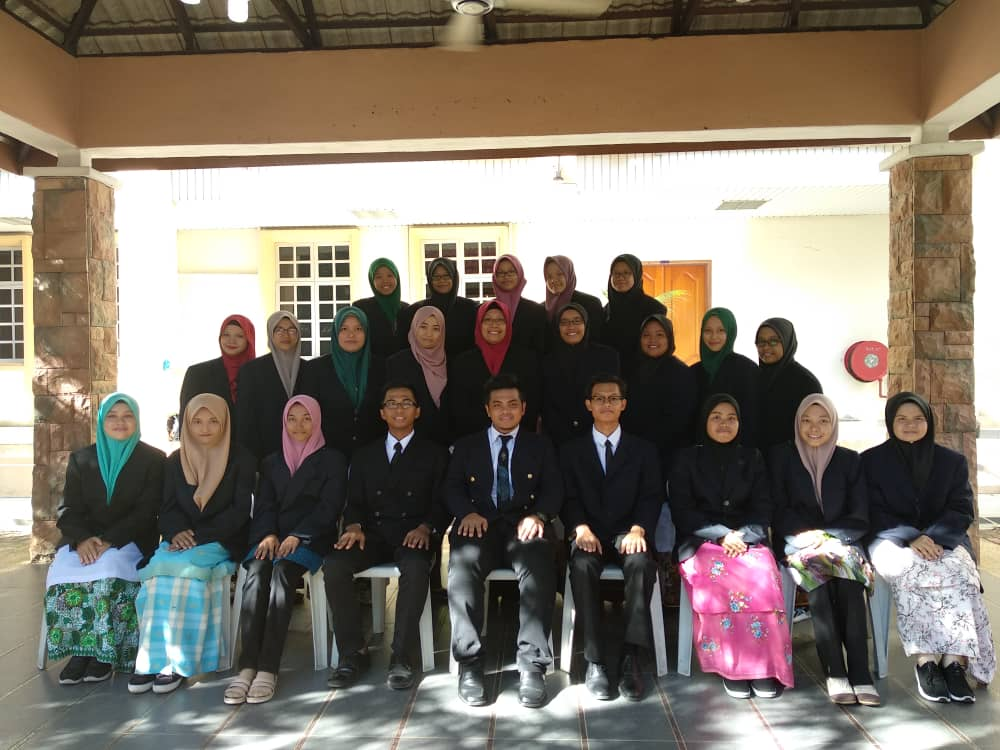

I start my education at Tadika Kemas Bandar Baru Bangi in 2005 until 2006. It was great experiences that I can start my study journey at this kindergarten because I have learn a lot of things at here that suitable for my childhood zaman.

In 2007, I continued my study at Sekolah Kebangsaan Bandar Baru Bangi (SKBBB) Jalan Dua. This school was near to my kindergarten. Most of my friends at kindergarten were school at this school and mostly we are in the same class. I school at here from 2007 till 2009, and then I moved to Semenyih.
I continued my secondary school at Sekolah Kebangsaan Semenyih(SKS) from 2010 until 2012. At this school I involved with volleyball and other sports. I had sitted for Ujian Penilaian Sekolah Rendah on 2012 at SKS and got 3A and 2B for my result.


Later then, I continued my study journey at high school, Sekolah Menengah Kebangsaan Bandar Rinching. I studied at there from 2013 until 2017. I sat the Pentaksiran Tingkatan Tiga(PT3) on 2015 and I got 3A 3B 1C and on 2017 I sat for Sijil Pelajaran Malaysia(SPM) and got 5A 2B and 2C.

University (Diploma)

On July 2018 I continued my study journey in Diploma in Library Management(IM120) at Universiti Teknologi Mara(UiTM) Kedah for 2 years. It is quite challenging for me to study far from my family and I’m struggling to make myself familiar with the situation. Every semester I survived and got excellent result. But in semester 3, finally I success to achieved my mission which is dean list award. Now I am still struggling for my last semester and hopefully me and my friends graduate on time, aamiin.

This website is develop for IMD311 (Introduction To Web Content Management And Design). Any information or materials are used for educational purpose only